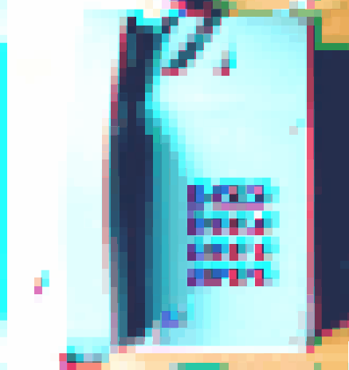

▼ art ▲
corvo rosa e o ritmo fantasma
 Back in 2014, I recorded a series of electric guitar works when I first decided I wanted to learn how to use a DAW.
Each one of these songs was started and completed in a single night (while my mother was away working) and what remains of them today are the .mp3 files that were recorded over six years ago.
Back in 2014, I recorded a series of electric guitar works when I first decided I wanted to learn how to use a DAW.
Each one of these songs was started and completed in a single night (while my mother was away working) and what remains of them today are the .mp3 files that were recorded over six years ago.
They are [still] dedicated to Diogo.
Released January 20, 2021
estímulo.miragem
 estímulo.miragem is a 6 track music album. Each track lengths exactly 10 minutes, adding up to one hour of music.
Its structure resembles that of an I Ching hexagram (六十四卦) which are composed by a top and a bottom bāguà (八卦), each made up of three lines.
It is a slow reflection on a short-timed life event aided by a strict set of rules and the Conjoining ䷞ hexagram.
Throughout the album, the tracks become increasingly more structered, rhythmic and tonal and some are split into noisy and melodic parts.
estímulo.miragem is a 6 track music album. Each track lengths exactly 10 minutes, adding up to one hour of music.
Its structure resembles that of an I Ching hexagram (六十四卦) which are composed by a top and a bottom bāguà (八卦), each made up of three lines.
It is a slow reflection on a short-timed life event aided by a strict set of rules and the Conjoining ䷞ hexagram.
Throughout the album, the tracks become increasingly more structered, rhythmic and tonal and some are split into noisy and melodic parts.Released December 21, 2018 at 22:23 (GMT).
Listen to the album on bandcamp >>
Listen to the album on soundcloud >>
ghostwritten
 ghostwritten were a math-rock/post-pock, Porto based trio from november 2013 to august 2018. Final lineup: Tiago Lêdo (gtr.), Dany Campos (gtr.), Daniel Andrade (drm.). Former members: Filipe Oliveira (ba.), Afonso Aguiar (ba.).
ghostwritten were a math-rock/post-pock, Porto based trio from november 2013 to august 2018. Final lineup: Tiago Lêdo (gtr.), Dany Campos (gtr.), Daniel Andrade (drm.). Former members: Filipe Oliveira (ba.), Afonso Aguiar (ba.).Listen to Mother Tongue on Reverbnation >>
dorayachi
 dorayachi [ドラヤチ] were japanese rock inspired band based in Porto from 2010 to 2013. dorayachi played in several japanese-culture events / anime conventions. Final lineup: Sara Gomes — Arya Urubunny (vo.), Tiago Lêdo — 空のリズム (gtr.), Dany Campos — Dany (gtr.), Daniel Andrade (drm.), Filipe Oliveira — Sora (ba.). Former members: Sara Rocha — Hachi (ba.), João — Tsume (drm.), João Lobo (drm.).
dorayachi [ドラヤチ] were japanese rock inspired band based in Porto from 2010 to 2013. dorayachi played in several japanese-culture events / anime conventions. Final lineup: Sara Gomes — Arya Urubunny (vo.), Tiago Lêdo — 空のリズム (gtr.), Dany Campos — Dany (gtr.), Daniel Andrade (drm.), Filipe Oliveira — Sora (ba.). Former members: Sara Rocha — Hachi (ba.), João — Tsume (drm.), João Lobo (drm.).nanoparticular
 Nanoparticular is a digital interactive installation developed in a 5-day hackathon (EMERGENCE@UP), aiming to raise awareness about the amazing powers and potencial dangers of metallic nanoparticles. Team: Marta Verde Baqueiro, Marta Correia, Francisca 'Kika' Rocha Gonçalves, Tiago Lêdo, António Sousa.
Nanoparticular is a digital interactive installation developed in a 5-day hackathon (EMERGENCE@UP), aiming to raise awareness about the amazing powers and potencial dangers of metallic nanoparticles. Team: Marta Verde Baqueiro, Marta Correia, Francisca 'Kika' Rocha Gonçalves, Tiago Lêdo, António Sousa.First presented September 27th, 2019 at Casa Comum, Rectorate of the University of Porto.
a vague sense of presence
a vague sense of presence is a symbiosis between individual sounds and its encompassing aural field. Each of the composers followed the path they desired, culminating in a work that reflects its particularities and likenesses. By linking all the parts, the path converged into a single point, a center. As a collective, the parts make up the whole. The individuality, although present and symbolized by each one of the speakers, is diluted. In the implied volume created by the structure, a space of communion and contemplation emerges, surrounded by sound. Each composition is generative, as well as the transitions between themselves. Using a probabilistic system and the intrinsic internal compatibility of the unique elements of each composition, the complete work is composed. An installation by COLECTIVO 「大音量コンピューター」 (Gonçalo Santos, ギ (Gui), Ivo Santos, Joana Rodrigues, Lêdo, Luís Arandas, Marcelo Sousa, Paulo Teixeira, Pedro Sarmento). A linear version of this work is avaliable as an album on bandcamp.First presented October 36, 2018 at FESTIVAL SEMIBREVE in Braga. This work was partly supported by MM-FEUP.
Listen to the album on bandcamp >>
Watch the teaser on Vimeo >>
Watch the making of on Vimeo >>
On ギ 's homepage >>
leave a message~
Leave a Message~ is an interactive installation that uses a Pure Data patch and a modified telephone at its core. The users pick up the telephone and are instructed to "Please leave your message after the tone *beep*", having then a few seconds to leave a voice message and end the transmission. The next user who picks up the phone will first listen the voice message left by the previous user and then have the opportunity to leave their own to the next user. In the end of the demonstration the integrity of the voice messages go through a speech-to-text proccess and a word-cloud is generated, represented the most frequent words used in the voice messages. Team: Ana Ferreira, Elaine Aguilar, José Pedro Silva, Roberto 'William' Nóbrega, Tiago Lêdo.This project was presented January, 2018 at the Faculty of Engineering of the Univerity of Porto.
Watch the video on Vimeo >>
This patch is avaliable on GitHub >>
câmara
Câmara is an interactive installation. A bedroom-like space to explore and reflect on the states of awareness through the stages of sleep. Team: Daniel Machado, Gonçalo Santos, Elaine Aguilar, Marcelo Valle, Miguel Soares, Tiago Lêdo.First presented in January 2018, at Carlos Amarante High School, Braga. Public display supported by BragaMediaArts.
flormiga

Flormiga is a digital technology and music project which aims to promote a sensible relationship between children and nature through sonic-plants. This project is the subjects of the Master's Dissertation Music with Plants: Cultivating Bonds Between Grade-Schoolers and Nature through Sound Design and it is being developed in collaboration and with the support of the educational service of the Orquestra Jazz de Matosinhos. The project was presented at the 21st Conference Consciousness Reframed 2019 — Sentient States: Bio-mind and Techno-nature.
Read the dissertation >>
Watch a video teaser >>
This patch is avaliable on Github >>
Listen to the sound design on Soundcloud >>
anita caça fantasmas
 Anita Caça Fantasmas is an interactive MAX/MSP patch based on EVP (electronic voice phenomena) that invites all participants to unveil the ghosts of a haunted room. The patch uses real-time sound analysis to trigger events, generate sound and respond to the user in a game-like, spooky manner.
Anita Caça Fantasmas is an interactive MAX/MSP patch based on EVP (electronic voice phenomena) that invites all participants to unveil the ghosts of a haunted room. The patch uses real-time sound analysis to trigger events, generate sound and respond to the user in a game-like, spooky manner.Watch a demo on Vimeo >>
This patch is avaliable on GitHub >>
toban djan
 Toban Djan is a generative sound MAX/MSP patch, featuring an imagined suburban soundscape by the sea. A lonely bus-stop experience in the company of a masculine and a feminine voice, who speak an impression of an east-asian language; a fly; and an ever-present feeling of anxienty. It was conceived for spacialized environments using Ambisonics and it was presented in both in 6-speaker and 9-speaker settings.
Toban Djan is a generative sound MAX/MSP patch, featuring an imagined suburban soundscape by the sea. A lonely bus-stop experience in the company of a masculine and a feminine voice, who speak an impression of an east-asian language; a fly; and an ever-present feeling of anxienty. It was conceived for spacialized environments using Ambisonics and it was presented in both in 6-speaker and 9-speaker settings.This patch was played as part of the installation a vague sense of presence and recorded as the track a vague sense of self-awareness.
Listen to a vague sense of self awareness on bandcamp >>
This patch is avaliable on GitHub >>
shell search
 Shell Search is a videogame demo project by the team The Smart Ponies. A collaboration between the Faculty of Engineering and the Faculty of Fine Arts of the University of Porto. Sound design and implementation with Wwise: Ana Rita Torres, Joana Rodrigues and Tiago Lêdo. Programming: João Ferreira, Inês Proença, João Costa and Lázaro Costa. 3D modeling and design: Catarina Neves, Hugo Sá, Morries Eigi.
Shell Search is a videogame demo project by the team The Smart Ponies. A collaboration between the Faculty of Engineering and the Faculty of Fine Arts of the University of Porto. Sound design and implementation with Wwise: Ana Rita Torres, Joana Rodrigues and Tiago Lêdo. Programming: João Ferreira, Inês Proença, João Costa and Lázaro Costa. 3D modeling and design: Catarina Neves, Hugo Sá, Morries Eigi. Presented June, 2018.
impish_delay.pd
 Impish_Delay.pd is a delay effect for electric guitar made using Pure Data and a little magick. A stereo ping pong delay with pitch shifting control option for the repetitions. Effect values may be controled in real-time with playing intensity and attack.
Impish_Delay.pd is a delay effect for electric guitar made using Pure Data and a little magick. A stereo ping pong delay with pitch shifting control option for the repetitions. Effect values may be controled in real-time with playing intensity and attack.This patch is avaliable on GitHub >>
Watch the demo on Vimeo >>
sardões
Sardões is playful photographic series about seeking ocellated lizards, the liveliness of the dune and the elapsing summer.Published online in September 29th, 2020
outono
 Outono is a documental short inspired by Matsuo Basho's autumn haiku. A film by ギ (Gui) Gaspar, Pedro Sarmento and Tiago Lêdo. Challenged by the Citadocs project.
Outono is a documental short inspired by Matsuo Basho's autumn haiku. A film by ギ (Gui) Gaspar, Pedro Sarmento and Tiago Lêdo. Challenged by the Citadocs project. Presented November, 2018
cinematograhy

Director of photograhy for the following short-films: Anexo, Dor and Extra-Corpo, written and directed by Tiago Colaço; Click! directed by Joana Sousa, Tiago Colaço and Tiago Lêdo; Ao Salvamento! directed by Ricardo Leite; Halo — Black Box a music video directed by Fábio Castro and Tiago Lêdo.
ana anonymous

Ana Anonymous is an animation short written and voiced by Ana Ferreira; with storyboard, drawings, animation, music and editing by Lêdo; presented as an installation and online with the help of Roberto 'William' Nóbrega, Elaine Aguilar and José Pedro Silva.
First presented November, 2017 at the Faculty of Engineering of the University of Porto.
theia

theia is a story about destruction as a creative impulse through the tale of the great impact. My original text, reading and music for the TUP's podcast series Pó-de-TUP.
Published February 3rd, 2021 in Pó-de-TUP, CASA COMUM U.Portomono
 Performer and production assistant in the film MONO: an experimental movie and performance directed by Joana Mont'Alverne and interpreted by the acting students of TUP's 2020 Introduction to Acting Course.
Performer and production assistant in the film MONO: an experimental movie and performance directed by Joana Mont'Alverne and interpreted by the acting students of TUP's 2020 Introduction to Acting Course.Premiered December 13th, 2020 at Cinema Passos Manuel, Porto
estímulo, miragem
My original text and reading of Estímulo, Miragem — a portuguese version of the introductory text of my homonymous musical work — was featured in Pó-de-TUP is a podcast by Teatro Universitário do Porto supported by Casa Comum from Universidade do Porto.